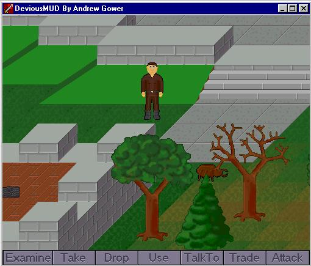
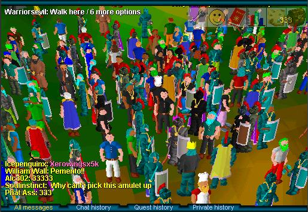
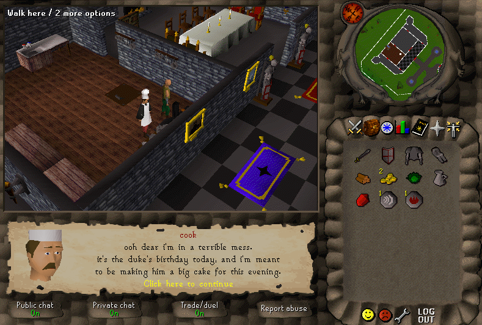
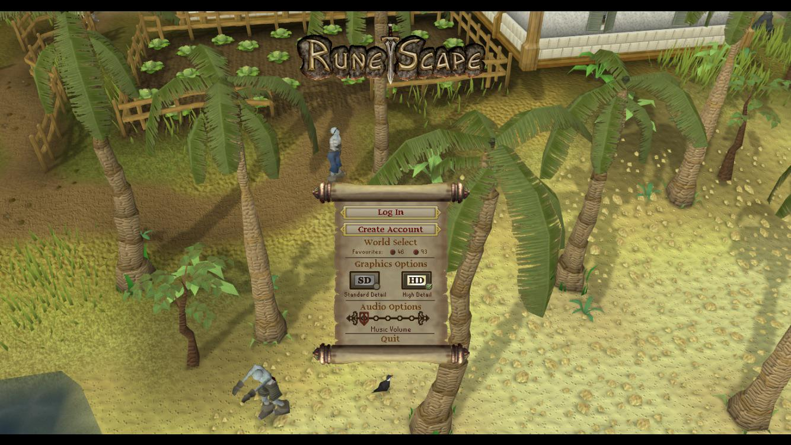
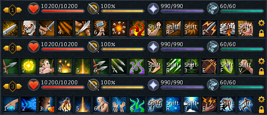
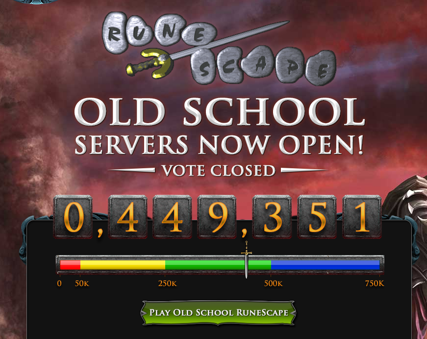

DeviousMUD
Andrew Gower initially created DeviousMUD, a graphical version of the text-based "Multi-User Dungeon"
concept popular at the time, in 1999, from his parents' home in Nottingham, England. Initially meant as just a test, he would return to the concept 2 year later to refine it.

RuneScape Classic
In 2001, Andrew brought in his brothers Ian and Paul to improve the DeviousMUD concept, this time called RuneScape. The brothers released a beta version on January 4, 2001, forming the
company Jagex (Java Gaming Experts) soon after.
In 2002, an optional monthly membership subscription was introduced, unlocking additional content and skills. This allowed the Gowers to set up an office, and begin hiring staff
to assist with customer support duties to support their growing user base.

RuneScape 2
By 2004, RuneScape had developed a healthy player base, and Jagex had become established as a company. At this time, they began work on rewriting the game engine. The new engine, featuring
fully 3D graphics, was released officially to the public as "Runescape 2".
At the same time, RuneScape was featured on the popular web gaming website Miniclip, resulting in a massive increase in players.

RuneScape High Definition
2008 saw the release of an upgraded game engine, resulting in better loading times and reduced memory requirements. Shortly after, a High Definition graphics mode was released,
helping to modernize RuneScape's graphics.

Evolution of Combat and RuneScape 3
In 2012, Jagex made the extremely controversial decision to change RuneScape combat system. Previously, RuneScape utilized a highly simplistic combat system of clicking a monster and automatically
attacking it until it died. With the Evolution of Combat, Jagex introduced an action bar full of different abilities, putting the game's combat more in line with other MMORPGs such as World oF Warcraft.
This decision resulted in a massive exodus of players unhappy with the direction of the game. This update marked a clear division between the original RuneScape 2, and the new RuneScape 3.

Old School RuneScape
Following sharply declining membership numbers after the release of EoC, Jagex released a poll to the community asking if they would be interested in a Old School version of the game.
This version would be based on a backup of the game from August, 2007. The poll was a massive success, reaching 449,000 yes votes in just 2 weeks.
Due to the level of interest shown by the community, Jagex decided to release the Old School servers along with a dedicated team purely for the Old School version of the game.
OSRS turned out to be a lasting success: As of September 2022, OSRS has nearly three times the active concurrent player count of RS3.

Source material: